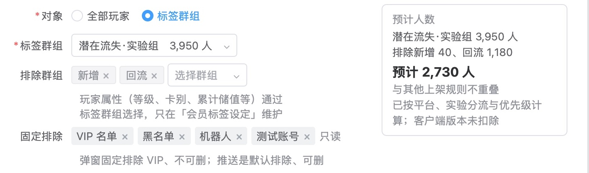
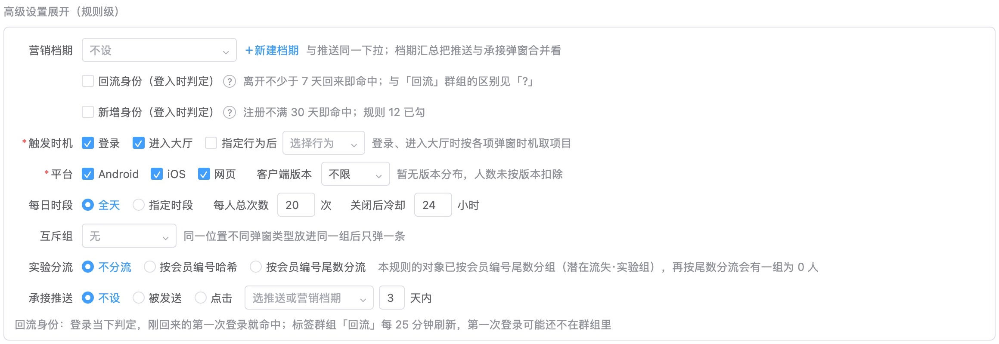
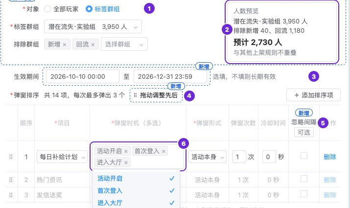

第 2 份｜每天配弹窗的运营，用这些投放条件，够不够给新增、回流、破产、潜在付费、潜在流失五类人群配出各自要的弹窗？
按下面 11 条标准逐条看 AI 评审的结论（每条只答「符合」或「不符合」），你只判同意或不同意；也可补标准里缺的条目。
「框架」＝你认可的一条规则的组成「事件＋状态＋内容＋频次」；「主管计划」＝你 10/10 转来的主管产品计划原文。
01判断标准：6 条，按「事件＋状态＋内容＋频次」排
功能覆盖事件：做完某事后弹
1能在玩家刚做完某件事时弹出，不只限登录、进大厅（如破产时、首储完成后、升级后）
对应人群 破产、新增、潜在付费|出处 你定的：框架中的「事件」；业内做法：Braze、Firebase、Appcharge
业内顶尖产品怎么做
- Braze：触发动作三选一——开始会话、购买、自定义事件 Braze 文档
- Firebase：至少设一个触发事件，可设多个，任一发生即弹 Firebase 文档
- Appcharge（游戏商店弹窗）：购买完成后弹，可设第 N 次购买才弹 Appcharge 文档
我们原型对应的部分
「指定行为」下拉现有：玩家升级、完成任务、通行证升级、中奖、限时加码礼包快到期；首储完成、完成新手挑战事件来源确认前不列出
。破产位置的触发固定为「破产时」。
功能覆盖状态：第一次登录就命中
2回流、新增玩家在回来或注册后的第一次登录，当下就能命中给他们的弹窗
对应人群 回流、新增|出处 你定的：框架中的「状态」；业内做法：Braze
业内顶尖产品怎么做
- Braze：可勾「显示前重新判断资格」，弹出前再查一次用户当下是否符合条件 Braze 文档
我们原型对应的部分
页底说明原文：回流身份：登录当下判定，刚回来的第一次登录就命中；标签群组「回流」每 25 分钟刷新，第一次登录可能还不在群组里
功能覆盖内容：各类人群的项目选得到
3五类人群各自要弹的项目都能在规则里选到并排先后，包括原来写死在客户端的新手挑战、新手通行证 例：新增→新手挑战、新手通行证；回流→回流任务；潜在付费→首储礼包；破产→破产礼包；潜在流失→每日补给计划
对应人群 五类|出处 你定的：主管计划「按五类人群定制内容」；你 10/15「客户端写死的弹窗……需要规整到后台里」；业内做法：Appcharge、Braze
业内顶尖产品怎么做
- Appcharge：弹窗内容就是礼包，按玩家分群给不同分群配不同礼包 Appcharge 文档
- Braze：每条站内信各自设受众（分群＋过滤条件） Braze 文档
我们原型对应的部分
项目从「活动与事件目录」选；目录含新手挑战、新手通行证（原写死在客户端）、回流任务、每日补给计划、储值类礼包各项。
功能覆盖频次：每日以外的周期
4每个弹窗项的次数能按每日以外的周期计：终身 1 次、每次回流 1 次、每周 N 次
对应人群 新增（新手引导终身 1 次）、回流、潜在流失|出处 你定的：框架中的「频次」；业内做法：Firebase、OneSignal、CleverTap
业内顶尖产品怎么做
- Firebase：默认每人看过一次即不再显示，可改为按天数设频次 Firebase 文档
- OneSignal：只一次（默认）／每次满足条件都显示／多次，如 2 次间隔 1 小时、12 次间隔 30 天 OneSignal 文档
- CleverTap：站内信可设每次会话最多几条 CleverTap 文档
我们原型对应的部分

「周期次数」可选：每日／每周／每 N 天／生效期间内／终身／每回流周期。规则级「每人总次数」可按累计、每日、每周计。
功能覆盖频次：弹过、关掉后冷却
5弹过或被玩家关掉后，能设一段时间内不再弹
对应人群 潜在付费（首储礼包反复被关）、全体|出处 你定的：框架中的「频次」；业内做法：Braze、Appcharge
业内顶尖产品怎么做
- Braze：默认每人只收一次；开「允许再次收到」后设间隔，最长 720 天 Braze 文档
- Appcharge：设冷却（分钟），弹过后须过这么久才能再弹 Appcharge 文档
- 按「被玩家关闭」另设停弹：上列几家文档都没写
我们原型对应的部分
关闭后冷却：玩家没点、直接关掉后，冷却期内本规则不再弹（1–720 小时）。另有项的「冷却时间」（0–86,400 秒）、项级「曝光无点击静默」（连续曝光 N 次没点 → M 天不弹该项）。
功能覆盖频次：同属几类时谁先
6一个玩家同时属于几类人群时，能指定只弹哪一条、谁先弹
对应人群 五类交叉（如回流又是潜在付费）|出处 你定的：主管计划「整体控制数量、内容、顺序」；业内做法：Braze、Appcharge、MoEngage
业内顶尖产品怎么做
- Braze：优先级分高、中、低三档，还可拖动排出精确顺序 Braze 文档
- Appcharge：同类弹窗同时可弹时，数字小的先弹 Appcharge 文档
- MoEngage：同一触发只弹优先级最高的一条，同级弹最新建的 未核对 MoEngage 文档
我们原型对应的部分
业内做法都已打开官方文档核对，标「未核对」的除外（MoEngage 官网连不上，内容取自此前对标记录）。
02按评审维度补齐的标准：5 条
按评审维度表补齐上面没覆盖到的维度；每条小标前半是所属维度。
状态与防错条件矛盾或 0 人时当场提示
7投放条件互相矛盾或配出 0 人时（如冷却长于规则有效期、每日时段为空、对象群组为 0 人），保存前页上当场提示并指出是哪一项
看哪里 高级设置里的投放条件与底部「保存」|出处 业内做法：NN/g 启发式第 5、9 条
业内顶尖产品怎么做
我们原型对应的部分

- 已写的提示：实验分流按尾数分、对象又已按尾数分组时，旁注「再按尾数分流会有一组为 0 人」，字段表写任一组 0 人不能保存；触发时机与各项弹窗时机对不上时不能保存；排序项排在弹出数量之后时确认框提示；每日时段重叠的段保存时合并
- 人数：右侧预计人数随改动重算；确认框列改前 → 改后人数
- 其余几种：关闭后冷却长于生效期间、对象群组为 0 人，页上与字段表没有写提示；每日时段不填即全天
方向一致五类人群按已定口径选
8五类人群在规则里按已定口径选取：新增、回流、破产用现有标签，潜在付费、潜在流失用新建标签，投放条件里没有另设一套人群判定
看哪里 「对象」与高级设置里的投放条件；字段表|出处 你定的：已定事项「五类目标人群都能圈出」
依据的标准怎么写
- 你定的（已定事项「五类目标人群都能圈出」）：新增、回流、破产可直接判定；潜在付费、潜在流失由方案定义并新建标签，不再写成「圈不出」
我们原型对应的部分

- 对象：选「标签群组」，下拉列群组与人数（字段表例：新增 10,749、回流 16,564、潜在流失·实验组 3,950）
- 高级设置另有两项勾选：「回流身份（登入时判定）」离开不少于 7 天回来即命中，登录当下判定，不等每 25 分钟刷新的「回流」群组；「新增身份（登入时判定）」注册不满 30 天即命中
事实与依据默认值与上限有出处
9投放条件中带默认值或上限的项（每人每天弹窗上限、关闭后冷却的默认时长、实验分流比例）都注明了数值的出处
看哪里 需求文档字段表「规则说明」列；高级设置里的投放条件|出处 写作标准：「每处改动、每个目标或指标都写出推得出它的理由」
依据的标准怎么写
- 写作标准：每处改动、每个目标或指标都写出推得出它的理由，写不出理由即不符合；门槛要说得出来源（数据分位或行业研究）
我们原型对应的部分
- 弹出数量：「1 至每人每天弹窗上限（当前 8）的整数」；上限本身不在本表单设，在「频率上限」页
- 关闭后冷却：「小时，1–720 整数」；建议默认值「活动类 24、储值类不设」
- 实验分流：建议默认不分流，分流时默认按会员编号哈希；实验组尾数例「1、3、5、7、9（约 50%）」
- 每人总次数：「1–9,999；不填不限」，例 20 次
- 承接推送时效：「1–14 天，建议默认值 3」
以上各行的规则说明没有附数值来源。
措辞与指代条件名旁有一句说明
10触发时机、实验分流、互斥、关闭后冷却等条件名，每个旁边有一句说明它管什么，运营不经解释就能读懂
看哪里 高级设置里各条件名与旁边的灰字|出处 写作标准：「后台功能名第一次出现说明它是什么」；业内做法：NN/g 启发式第 2 条
业内顶尖产品怎么做
- NN/g 启发式第 2 条「系统与现实世界匹配」：用使用者熟悉的词和概念，不用系统内部的行话 NN/g 文章
我们原型对应的部分
- 营销档期：「与推送同一下拉；档期汇总把推送与承接弹窗合并看」
- 回流身份、新增身份：「离开不少于 7 天回来即命中」「注册不满 30 天即命中」，另有「?」
- 触发时机：「登录、进入大厅时按各项弹窗时机取项目」
- 平台、客户端版本：「暂无版本分布，人数未按版本扣除」
- 每日时段、每人总次数、关闭后冷却：旁边没有灰字
- 互斥组：「同一位置不同弹窗类型放进同一组后只弹一条」
- 实验分流：「本规则的对象已按会员编号尾数分组（潜在流失·实验组），再按尾数分流会有一组为 0 人」
- 承接推送：旁边没有灰字
右侧说明栏第 4–8、15、17、18 条另有解释；说明栏是原型注释，不在后台界面上。

措辞与指代整页句式：说明文字的开头
11投放条件各项的说明文字，没有成片以同一主语（如「运营」）或同一句式开头的句子，上下文已确定的主语没有逐句写出
看哪里 高级设置展开里各条件旁的灰字与页底说明；右侧说明栏讲投放条件的各条|出处 你 10/15：「永远是运营在开头，这三个字真的有必要？」；措辞审查「整稿通读」
依据的标准怎么写
- 措辞审查「整稿通读」：逐句查完后通读全稿，同一开头、同一句式反复出现的删去或改写；全稿主体已经明确的不逐句写出，例如运营用的后台不写「运营在……」；补主语只补读者会读错或读不出的
- 你 10/15（当时原型改稿后有 63 处以「运营」开头）：「永远是运营在开头，这三个字真的有必要？真的认真检查措辞了吗？」
我们原型对应的部分
- 以「运营」开头的句子：没有
- 各条件旁的灰字（原文，自上而下）
营销档期「与推送同一下拉；档期汇总把推送与承接弹窗合并看」
回流身份「离开不少于 7 天回来即命中；与『回流』群组的区别见『?』」
新增身份「注册不满 30 天即命中；规则 12 已勾」
触发时机「登录、进入大厅时按各项弹窗时机取项目」
客户端版本「暂无版本分布，人数未按版本扣除」
互斥组「同一位置不同弹窗类型放进同一组后只弹一条」
实验分流「本规则的对象已按会员编号尾数分组（潜在流失·实验组），再按尾数分流会有一组为 0 人」 - 页底说明：「回流身份：登录当下判定，刚回来的第一次登录就命中；标签群组『回流』每 25 分钟刷新，第一次登录可能还不在群组里」
- 说明栏讲投放条件的各条：小标为新增触发时机、新增平台与客户端版本、新增每日时段、每人总次数、关闭后冷却、新增优先级与互斥组、新增实验分流（连续 5 条以「新增」开头），以及固定排除与回流身份（登入时判定）、营销档期、承接推送；正文句例「时段外不弹本规则；总次数从上架起累计；玩家未点击、直接关闭后，冷却时间内本规则不再弹出」
灰字所在的截图见第 10 条。
业内做法都已打开官方文档核对。信息结构与主次、视觉完成度、改动可辨、无多余内容四个维度与第 1 份是同一页，在第 1 份判。
03参考案例：你推翻过的两份同类稿
例 1 只列了对象、时机、次数、冷却
- 你的原话
- 「弹窗的配置条件目前都有哪些纬度？缺不缺？」（10/15）
- 当时的稿
- 10/14 原型「编辑弹窗规则」：对象、排除、生效期间、排序；每项只有弹窗时机、次数、冷却（下图）
- 改后
- 本题第 2 份：加了触发时机（含指定行为后）、回流／新增身份、平台与版本、每日时段、每人总次数、关闭后冷却、优先级、互斥组；每项加周期次数等

例 2 把后台已有的说成没有
- 你的原话
- 「为什么说先后不可控呢？」（10/10）
- 当时的稿
- 方案第二版写「弹窗数量与先后不可控」；后台实际已有「大厅弹窗顺序设定」（每条的排序、弹出个数）和玩家弹窗顺序查询
- 改后
- 第三版写明后台已有排序与弹出个数，跨规则先后由系统给定、可查
04怎么判
05还缺什么，判完没有
每次点选和输入都随手存在这台电脑的浏览器里，刷新、关掉再开都还在。